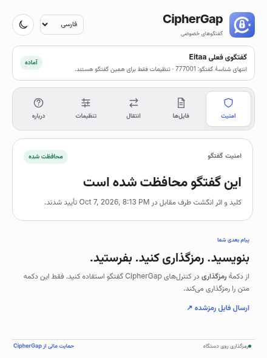
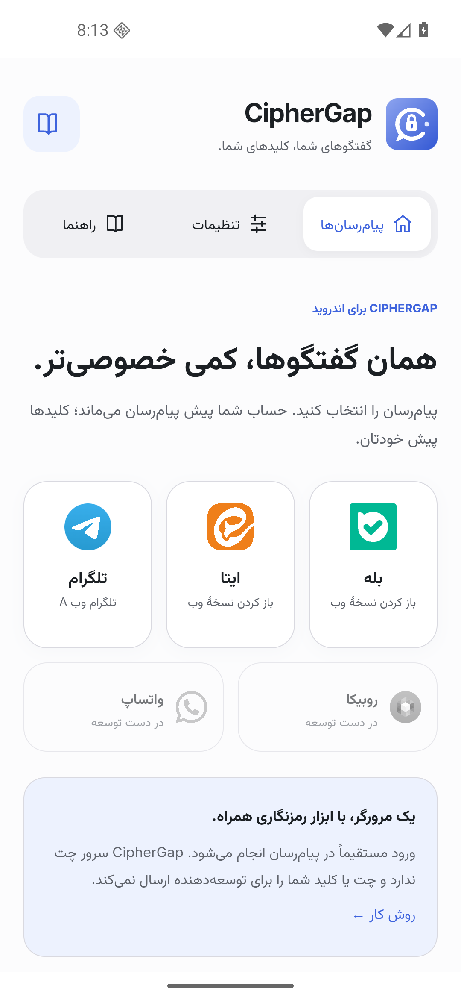

متن و فایل، با هم
پیام فارسی، انگلیسی و ایموجی؛ فایل، عکس و صدایی که پس از رمزگشایی باز یا دانلود میشوند.
رمزگذاری برای گفتگوی روزمره
CipherGap افزونهٔ کامپیوتر و برنامهٔ اندروید است. پیام و فایل را روی دستگاه شما رمز میکند؛ آنها را در همان چت میفرستید و طرف مقابل با CipherGap و کلید مشترک بازشان میکند.


خودِ برنامه؛ روی کامپیوتر و اندروید.
روی نسخهٔ وب، با حساب فعلی شما.
01 / از متن شما تا چت
دکمهٔ رمزگذاری CipherGap را میزنید، پیام رمزشده در همان گفتگو ارسال میشود و طرف مقابل آن را با کلید مشترک میخواند.
پیام را بنویسید یا فایل را از ابزار CipherGap انتخاب کنید.
دکمهٔ Encrypt یا Secure files را بزنید.
متن رمزشده یا فایل .cgpe به پیامرسان میرسد.
طرف مقابل با CipherGap پیام را باز میکند.
دکمههای معمولی پیامرسان، پیام و فایل معمولی میفرستند. برای رمزگذاری از ابزارهای CipherGap استفاده کنید.
پیام فارسی، انگلیسی و ایموجی؛ فایل، عکس و صدایی که پس از رمزگشایی باز یا دانلود میشوند.
از داخل چت کلید مشترک بسازید و کد ششرقمی را با طرف مقابل از یک راه مطمئن مقایسه کنید.
پشتیبان رمزدار از همهٔ کلیدها و تنظیمات یا یک چت بگیرید. برای اشتراک یک کلید، QR بسازید یا اسکن کنید.
02 / قبل از نصب، داخلش را ببینید
تصاویر واقعی افزونهٔ ۱.۷.۰ و اندروید ۰.۱.۳، با دادههای نمایشی در یک گفتگوی آزمایشی. برای دیدن جزئیات، تصویر را باز کنید.
ارسال فایل رمزشده و تنظیم دریافت خودکار برای همین گفتگو.
خروجی کامل یا یک چت؛ واردکردن پشتیبان و اشتراک کلید با QR.
همان کلید و تنظیمات گفتگو، داخل برنامهٔ اندروید.
فرمت مشترک پشتیبان بین اندروید و وب؛ خواندن QR از دوربین یا تصویر.
03 / از این دستگاه شروع کنید
شما و طرف مقابل، هر دو CipherGap لازم دارید. در بله، ایتا و تلگرام وب A میتوانید از اندروید و کامپیوتر با هم گفتگو کنید. روبیکا و سروش پلاس فعلاً برای دسکتاپاند.
Desktop 1.7.0 / Android 0.1.3
ریلیز دسکتاپ ۱.۷.۰ · ریلیز اندروید ۰.۱.۳
مشاهدهٔ SHA-256 فایلهاCipherGap یک مرورگر برای نسخهٔ وب پیامرسانهاست. باید داخل خود برنامه وارد حساب پیامرسان شوید.
دانلود APK اندروید ↓ساخت release با امضای اختصاصی و دیباگ خاموش. برای جایگزینی نسخهٔ debug، اول پشتیبان رمزدار بگیرید؛ سپس نسخهٔ قبلی را حذف، این نسخه را نصب و پشتیبان را بازیابی کنید. راهنمای انتقال از نسخهٔ قدیمی
اگر اندروید اجازه خواست، نصب از مرورگر یا Files را برای همین نصب فعال کنید و سپس خاموش کنید. Play Protect را روشن نگه دارید.
در برنامه، بله، ایتا یا Telegram Web A را انتخاب کنید. برنامهٔ اصلی پیامرسان تغییری نمیکند.
بعد از انتخاب مخاطب، Chat security را بزنید. راهنمای ساخت کلید مشترک در بخش بعدی همین صفحه است.
اندروید ۸ به بالا برای نصب لازم است؛ WebView هم باید اجرای جداگانه را پشتیبانی کند. آن را از مسیر رسمی دستگاه بهروز کنید. اگر هشدار باقی ماند، از نسخهٔ کامپیوتر استفاده کنید.
افزونه را روی نسخهٔ دسکتاپ مرورگر نصب کنید. دانلود و نصب دستی است.
دانلود ZIP افزونه ↓پوشهای را نگه دارید که manifest.json داخل آن است.
این آدرس را در نوار آدرس مرورگر وارد کنید.
chrome://extensionsDeveloper mode را روشن کنید؛ Load unpacked را بزنید و پوشهٔ افزونه را انتخاب کنید.
وارد حساب شوید و یک گفتگو باز کنید. آیکون CipherGap را در نوار ابزار مرورگر باز کنید.
افزونه را روی نسخهٔ دسکتاپ مرورگر نصب کنید. دانلود و نصب دستی است.
دانلود ZIP فایرفاکس ↓پوشهای را نگه دارید که manifest.json داخل آن است.
این آدرس را در نوار آدرس مرورگر وارد کنید.
about:debugging#/runtime/this-firefoxLoad Temporary Add-on را بزنید و manifest.json را انتخاب کنید. این نصب با بستهشدن Firefox حذف میشود.
وارد حساب شوید و یک گفتگو باز کنید. آیکون CipherGap را در نوار ابزار مرورگر باز کنید.
افزونه را روی نسخهٔ دسکتاپ مرورگر نصب کنید. دانلود و نصب دستی است.
دانلود ZIP افزونه ↓پوشهای را نگه دارید که manifest.json داخل آن است.
این آدرس را در نوار آدرس مرورگر وارد کنید. برای Brave از brave://extensions استفاده کنید.
edge://extensionsDeveloper mode را روشن کنید؛ Load unpacked را بزنید و پوشهٔ افزونه را انتخاب کنید.
وارد حساب شوید و یک گفتگو باز کنید. آیکون CipherGap را در نوار ابزار مرورگر باز کنید.
04 / اولین گفتگوی رمزشده
این مراحل در برنامهٔ اندروید و افزونه یکیاند. لازم نیست دستگاههای شما یکسان باشند.
در تب امنیت، «راهاندازی چت امن» را بزنید. طرف مقابل درخواست را در گفتگو میپذیرد.
از تماس مطمئن یا حضوری، کد را روی هر دو دستگاه مقایسه و تأیید کنید. درخواست و کد پس از ۱۵ دقیقه منقضی میشوند.
با Encrypt یک پیام کوتاه بفرستید و مطمئن شوید طرف مقابل آن را میخواند. بعد، پیام و فایل موردنظرتان را ارسال کنید.
رمزگذاری و رمزگشایی روی دستگاه انجام میشوند. خود پیامرسان، پیام رمزشده و اطلاعات عادی حساب و گفتگو را دریافت میکند.
وقتی پیام در صفحهٔ وب باز میشود، کد همان پیامرسان میتواند متن بازشده را بخواند. CipherGap هویت، زمان گفتگو یا دستگاه آلوده را پنهان یا ایمن نمیکند.
هر کسی QR کلید را ببیند میتواند کلید را دریافت کند. فایل پشتیبان رمزدار است؛ گذرواژهٔ آن را جدا نگه دارید.
05 / پیش از شروع
پاسخهای کوتاه دربارهٔ نصب، کلیدها و چیزی که CipherGap انجام میدهد.
گزارش مشکل در GitHub ↗یک افزونهٔ کامپیوتر و برنامهٔ اندروید برای رمزگذاری پیام و فایل قبل از ارسال است. گفتگو از نسخهٔ وب پیامرسان فعلی شما عبور میکند؛ CipherGap روی دستگاه رمزگذاری و رمزگشایی میکند.
بله. هر دو نفر CipherGap و یک کلید مشترک لازم دارند. در بله، ایتا و تلگرام وب A، یک نفر میتواند اندروید داشته باشد و دیگری افزونهٔ کامپیوتر.
CipherGap در نسخهٔ وب کار میکند. روی کامپیوتر، سایت پیامرسان را باز میکنید؛ روی اندروید، همان سایت داخل مرورگر CipherGap باز میشود. برنامهٔ اصلی پیامرسان تغییر نمیکند.
دسکتاپ: بله، ایتا، Telegram Web A، روبیکا و سروش پلاس. اندروید: بله، ایتا و Telegram Web A. Telegram Web K و واتساپ پشتیبانی نمیشوند.
بله. نسخهٔ فعلی، هم شناسهٔ عددی مانند #333000 و هم نام کاربری مانند #@mralizohdi را تشخیص میدهد.
در تب انتقال، با یک گذرواژهٔ حداقل ۱۰ کاراکتری «خروجی همه» بگیرید. در دستگاه دیگر همان فایل و گذرواژه را وارد و بازیابی گفتگوهای اصلی را انتخاب کنید. حسابهای پیامرسان را جداگانه وارد کنید؛ تاریخچه و نشست ورود در پشتیبان نیستند.
پشتیبان یک چت بگیرید و طرف مقابل هنگام واردکردن، «استفاده از کلید در گفتگوی فعلی» را انتخاب کند؛ یا QR کلید را خصوصی نشان دهید و با دوربین، تصویر یا متن اسکنشده وارد کنید. کلید واردشده به معنی تأیید هویت نیست.
CipherGap کلیدها یا گذرواژهٔ پشتیبان را روی سرور نگه نمیدارد و نمیتواند آنها را بازیابی کند. حذف یا تغییر کلید ممکن است پیامهای قبلی را غیرقابلخواندن کند. یک پشتیبان امن نگه دارید.
دوربین فقط با مجوز شما برای اسکن QR در صفحهٔ محلی CipherGap فعال میشود؛ پیامرسانها و میکروفون دسترسی ندارند. اعلانها اختیاری و عمومیاند و فقط وقتی برنامه و صفحه باز هستند کار میکنند؛ اعلان پسزمینه نداریم.
فعلاً نسخهٔ iOS یا افزونهٔ Safari نداریم. نسخههای فعلی، برنامهٔ اندروید و افزونههای دسکتاپ Chrome، Chromium و Firefox هستند.
برای ارسال رمزشده باید ابزار CipherGap را انتخاب کنید. دکمههای معمولی پیامرسان، ارسال معمولی انجام میدهند. رمزگشایی و دریافت فایلهای تازه میتوانند برای هر چت اختیاری و خودکار باشند.
استفاده از CipherGap رایگان و کد آن باز است. حمایت مالی کاملاً اختیاری است و به توسعه و نگهداری کمک میکند.
با همراهی شما ادامه پیدا میکند
اگر CipherGap برایتان مفید است، میتوانید به توسعه و نگهداری آن کمک کنید. حمایت مالی اختیاری است.